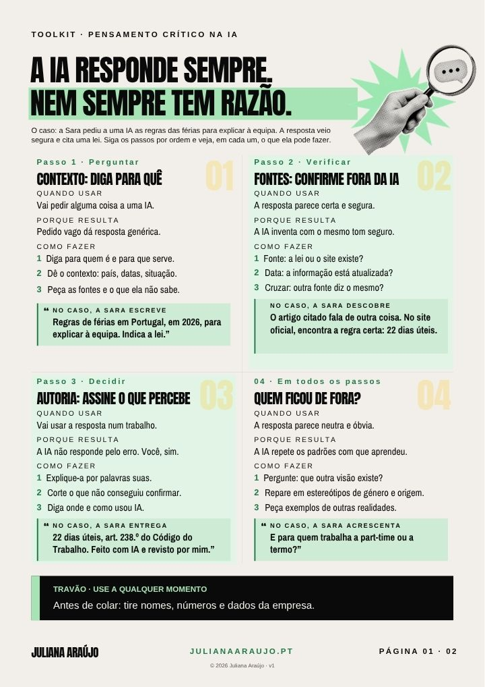

Toolkit · Sessão de inteligência artificial
Pensamento crítico na IA
Três passos para usares a IA sem lhe entregares o pensamento. Duas páginas, com um exercício por dia durante sete dias.
Gostaste?
Segue @julianaaraujo.pt
Partilho lá mais ferramentas e exercícios como este. E se fizeres o compromisso da página 2, põe-no nas stories e identifica-me.
Seguir no InstagramAbre a app, se a tiveres
Modo sala · projetar os QR codes